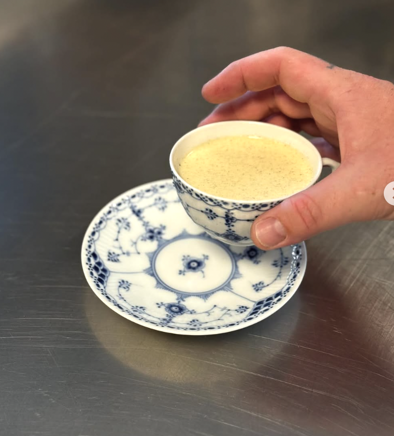
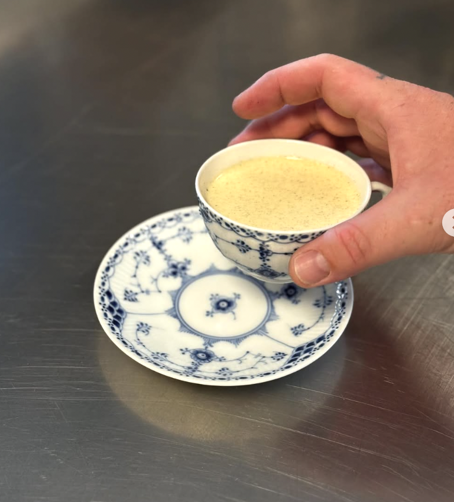

VELKOMMEN TIL RESTAURANT ALICE
Serveres hver onsdag kl. 18:00
150,- pr. person
Børn under 10 år spiser til halv pris
Dørene åbner kl. 17:00
Hos os samles vi omkring ét langt bord, én fælles middag, én fælles oplevelse. Alt bliver serveret family style, som man ville gøre det hjemme hos mormor: fadene bliver sat midt på bordet, og man sender videre, deler, snakker og griner, mens man tager for sig.
Dog slipper du for det énmandsgruppepres, om at tage en kartoffel mere, man kun kan få fra ens mormor. Du kan forsyne dig med drikkevarer i baren.
Når fadene er tomme, bliver de fyldt op igen – indtil den sidste buskeknap bliver løsnet fra dens pressede overarbejde.
Det handler ikke bare om maden, men om nærvær, samtaler og fællesskab. Her er ingen formelle pladser eller stive retter. Kun god mad, varme stemninger og nye bekendtskaber.
Så tag plads ved langbordet, løft glasset, og vær med til en aften, hvor vi spiser sammen – ikke bare ved siden af hinanden.
Velbekomme!
Selskaber
 
